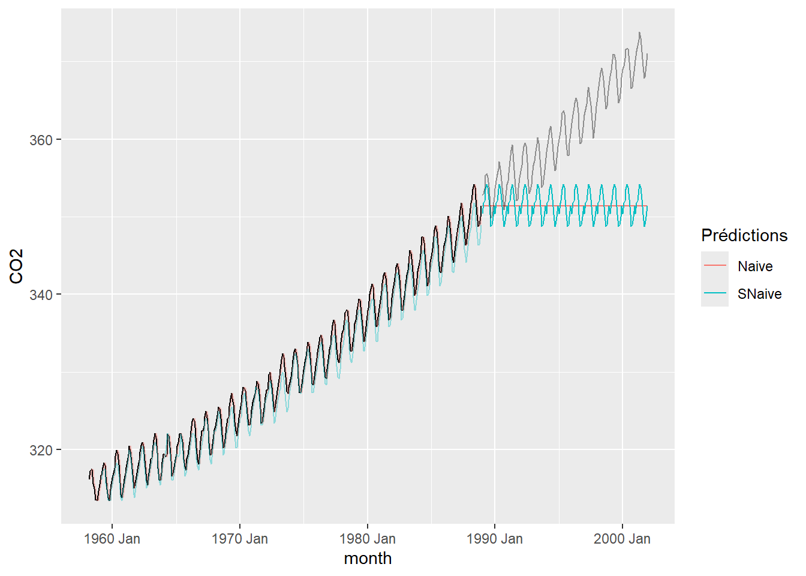
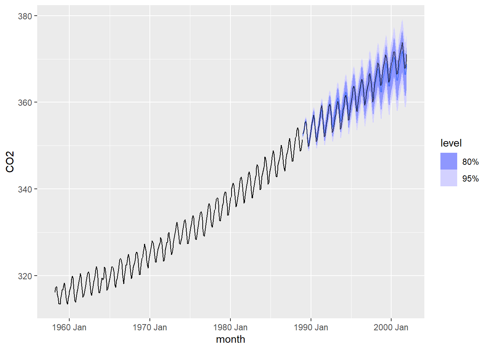
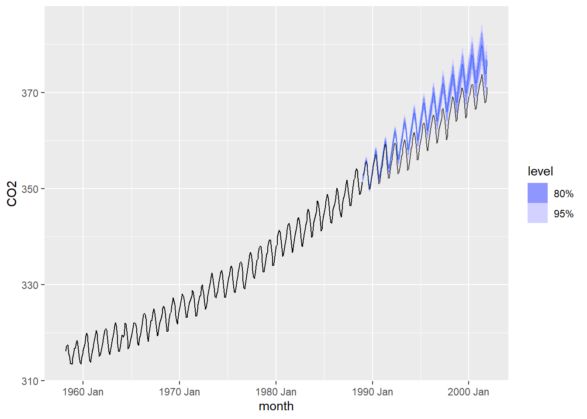
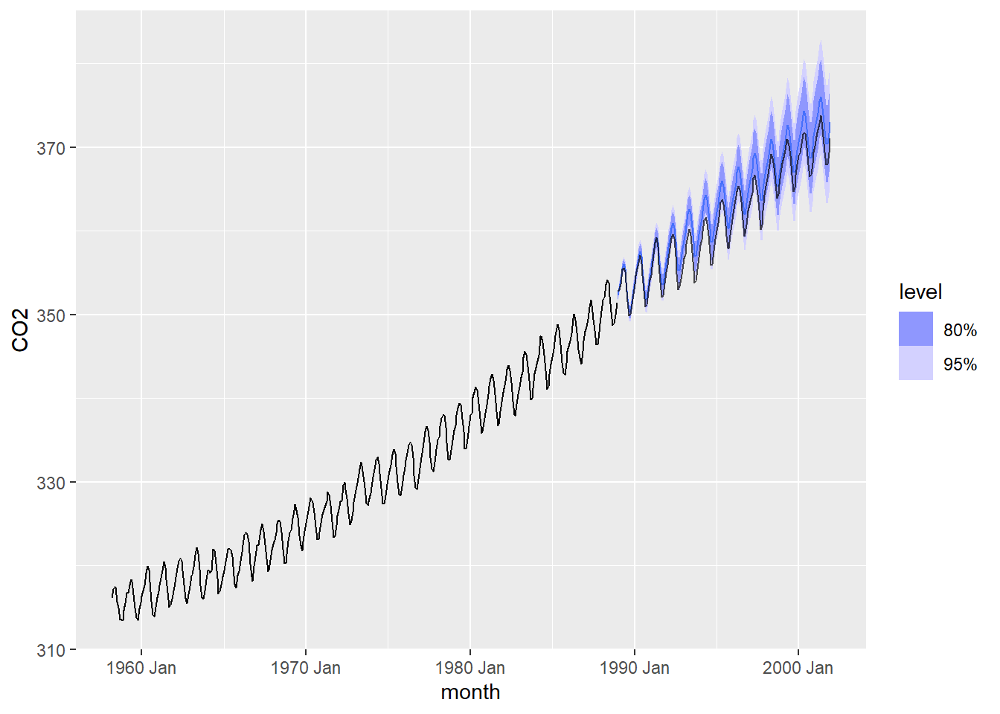
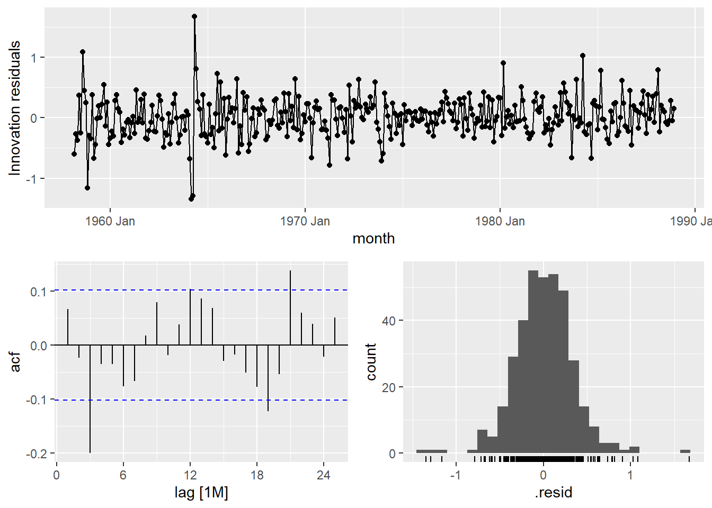
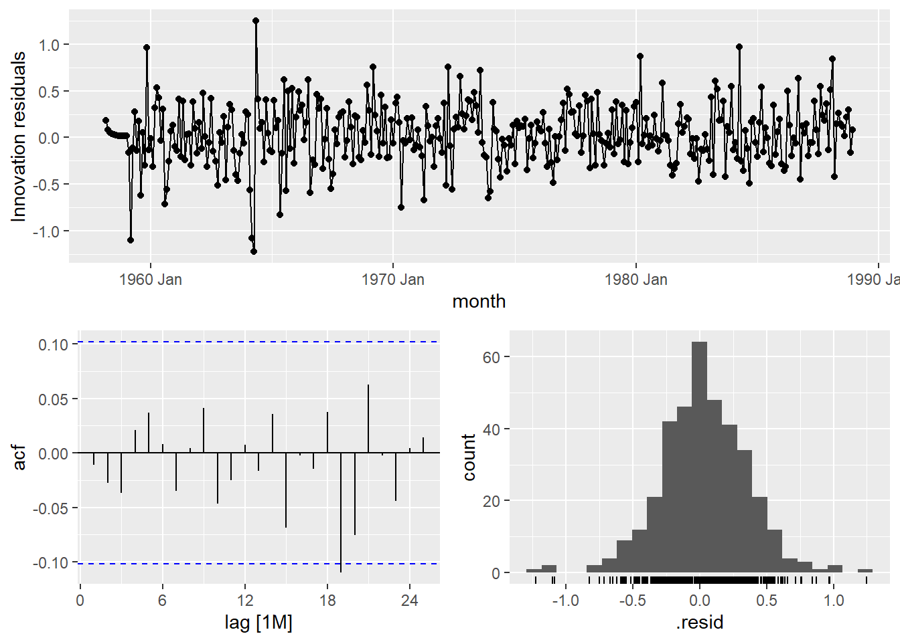

Les données sont chargées à partir du fichier “hawai.csv”. Toutefois, les valeurs de temps sont données par des nombres décimaux correspondant aux années. Ainsi, la première valeur, qui correspond au mois de mars 1958, est associée à la valeur de temps 1958.167. La fonction date_decimal de la librairie lubridate est donc utilisée pour convertir ces valeurs en format “année-mois-jourheure:minutes:secondes”. Le fuseau horaire à Hawaï est HST.
Comme il s’agit de données mensuelles, une colonne “month” est ajoutée pour représenter le mois, et est utilisée comme index. Pour créer cette colonne, on arrondit au mois près, étant donné que les nombres décimaux représentant les années dans le fichier initial sont arrondis, menant parfois à deux dates dans le même mois. Par exemple, convertir à l’aide de la fonction date_decimal le jeu de données initial mène à deux observations en janvier 1959 (le 1er et le 31 janvier), mais à aucune observation en février 1959. Ainsi, arrondir au mois près permet de s’assurer qu’il y a bien une donnée à chaque mois.
Finalement, les données sont transformées au format tsibble pour les manipulations qui suivront.
On peut observer en visualisant les données que le CO2 semble avoir une oscillation annuelle, mais que d’une année à l’autre, la tendance du CO2 augmente entre 1958 et 2001.
Création des jeux d’entraînement et de test
Les données sont séparées en un jeu d’entraînement comportant environ 70% des données, et un jeu de test contenant les 30% restant. Comme les données couvrent un intervalle d’environ 43 ans, le jeu d’entraînement comporte les 30 premières années, soit de 1958 à 1988.
Entraînement et validation d’un modèle prévisionnel
Deux modèles prévisonnels sont comparés dans cette section, soit un modèle conçu en suivant la méthode SES, et un autre avec la méthode ARIMA. La méthode naïve et la méthode naïve saisonnière ne sont pas considérés en raison de leur simplicité. En effet, la méthode naïve ne se base que sur la valeur précédente, et ne permettra donc pas de modéliser les fluctuations cycliques annuelles ni la tendance à la hausse d’une année à l’autre.
La méthode naïve saisonnière permettrait quant à elle de mieux représenter les oscillations annuelles, mais en se basant sur la saison précédente, elle ne permettrait pas non plus de modéliser la tendance à la hausse.
Les lignes de code suivantes illustrent ceci en créant des modèles basés sur la méthode naïve et sur la méthode naïve saisonnière à partir du jeu d’entraînement créé plus tôt, en générant des prédictions sur 13 ans (correspondant au jeu de test), puis en comparant les prédictions de chaque modèle au jeu de test.
# Créer les modèleshawai_fit_naive <- hawai_ts_train |>model(Naive =NAIVE(CO2),SNaive =SNAIVE(CO2) )# Générer les prédictions pour 13 anshawai_fc_naive <- hawai_fit_naive |>forecast(h =12*13)# Visualiser les prédictionshawai_fc_naive |>autoplot(hawai_ts_train, level =NULL) +autolayer(fitted(hawai_fit_naive), .vars = .fitted, alpha =0.4)+autolayer(hawai_ts_test, .vars = CO2,alpha =0.4) +guides(colour =guide_legend(title ="Prédictions"))
Warning: Removed 13 rows containing missing values or values outside the scale range
(`geom_line()`).

Ainsi, ces modèles ne semblent pas appropriés pour modéliser l’évolution du CO2 dans le temps. Les sections suivantes s’intéresseront donc aux méthodes SES et ARIMA, et seuls ces deux modèles seront considérés pour le reste de l’analyse (par exemple pour l’analyse des résidus).
Méthode SES
Un modèle basé sur la méthode SES est ici présenté. Tel que discuté plus haut, l’observation du jeu de données permet d’observer une tendance à la hausse du CO2 dans le temps, de même que des fluctuations saisonnières. Pour prendre en compte la tendance, la méthode de Holt est considérée, étant donné que la méthode de Holt adoucit mènerait à une tendance de moins en moins importante, ce qui n’est pas le cas dans le jeu de données. Pour les fluctuations saisonnières, des paramètres saisonniers additifs seront utilisés.
Le choix de ces paramètres peut être validé en laissant le modèle ETS par défaut optimiser les paramètres, tel que présenté dans les lignes suivantes :
# Créer le modèlehawai_fit_ses <- hawai_ts_train |>model(ETS(CO2))report(hawai_fit_ses)
Les prédictions d’un tel modèle peuvent alors être visualisées :
# Générer les prédictions pour 13 anshawai_fc_ses <- hawai_fit_ses |>forecast(h =12*13)# Visualiser les prédictionshawai_fc_ses |>autoplot(hawai_ts_train) +autolayer(hawai_ts_test, .vars = CO2,alpha =0.7)

La figure précédente permet de constater que le modèle semble beaucoup mieux performer que les modèles générés avec la méthode naïve et la méthode naïve saisonnière. Une analyse plus quantitative du modèle sera effectuée à la section suivante, mais pour l’instant, la comparaison visuelle entre le jeu de test et la prédiction pour les années 1989 à 2001 montre que les données du jeu de test se trouvent en grande majorité à l’intérieur de l’intervalle de confiance de 80%. Ceci n’est pas le cas lorsque des paramètres saisonniers multiplicatifs sont utilisés, comme en témoigne la figure suivante. Ainsi, pour la suite de l’analyse, seul le modèle précédent (avec des paramètres saisonniers additifs, tel que déterminé automatiquement par R) sera considéré.
# Créer le modèle avec paramètres saisonniers multiplicatifshawai_fit_ses_mult <- hawai_ts_train |>model(ses =ETS(`CO2`~error("A") +trend("A") +season("M")) )# Visualiser les prédictionshawai_fit_ses_mult |>select(ses) |>forecast(h =13*12) |>autoplot(hawai_ts_train) +autolayer(hawai_ts_test, .vars = CO2,alpha =0.7)

Méthode ARIMA
Un modèle basé sur la méthode ARIMA est présenté dans cette section. Comme pour le modèle basé sur la méthode SES, les fonctionnalités de la librairie sont utilisées pour optimiser les paramètres du modèle.
# Créer le modèlehawai_fit_arima <- hawai_ts_train |>model(ARIMA(CO2,stepwise =FALSE, approximation =FALSE))report(hawai_fit_arima)
Le modèle ainsi créé a les valeurs suivantes pour les paramètres liés aux observations précédentes : p = 0, d = 1 et q = 3. Pour les paramètres liés aux saisons précédentes, on a : P = 2, D = 1 et Q = 1.
Le modèle est utilisé pour prédire les données pour les 13 années de 1989 à 2001, comme pour le modèle SES.
# Générer les prédictions pour 13 anshawai_fc_arima <- hawai_fit_arima |>forecast(h =12*13)# Visualiser les prédictionshawai_fc_arima |>autoplot(hawai_ts_train) +autolayer(hawai_ts_test, .vars = CO2,alpha =0.7)

Encore une fois, le modèle semble beaucoup mieux performer que ceux basés sur la méthode naïve et sur la méthode naïve saisonnière. L’analyse quantitative complète est effectuée plus bas, mais pour l’instant, il est possible d’observer visuellement que les données semblent en général à l’intérieur de l’intervalle de confiance de 95%, mais que les prédictions semblent moins exactes qu’avec le modèle SES.
Analyse des résidus et discussion
Méthode SES
Cette section présente l’analyse des résidus du modèle basé sur la méthode SES présenté plus haut. D’abord, le calcul d’exactitude permet de voir que l’erreur moyenne absolue échelonnée est inférieure à 1, ce qui permet déjà de constater que le modèle est assez performant :
accuracy(hawai_fc_ses, hawai_ts)
# A tibble: 1 × 10
.model .type ME RMSE MAE MPE MAPE MASE RMSSE ACF1
<chr> <chr> <dbl> <dbl> <dbl> <dbl> <dbl> <dbl> <dbl> <dbl>
1 ETS(CO2) Test 0.259 1.11 0.884 0.0675 0.243 0.720 0.806 0.944
En ce qui concerne les résidus, la fonction gg_tsresiduals permet de constater que visuellement, les résidus semblent suivre une distribution normale, mais que tous les résidus ne se trouvent pas entre les intervalles de confiance. Ceci pourrait être relié à une autocorrélation entre les résidus, correspondant à une structure dans les données qui n’a pas été prise en compte par le modèle.
gg_tsresiduals(hawai_fit_ses)

Comme la p-value obtenue avec le test de Ljung-Box est très faible (0.001), il est peu probable que les résidus correspondent à un bruit blanc :
hawai_res_ses <- hawai_fit_ses |>augment()hawai_res_ses |>features(.innov, ljung_box, lag =19)
Ceci peut être confirmé par un test de Shapiro-Wilk :
shapiro.test(hawai_res_ses$.innov)
Shapiro-Wilk normality test
data: hawai_res_ses$.innov
W = 0.96983, p-value = 6.061e-07
Comme la p-value est très faible, il est peu probable que que les résidus suivent bel et bien une distribution normale. En bref, l’exactitude du modèle permet de conclure qu’il permet bien de prédire l’évolution du CO2 dans le temps, mais l’analyse des résidus apporte une nuance quant à la confiance qu’on peut avoir dans un tel modèle.
Méthode ARIMA
Une analyse des résidus similaire peut être faite pour le modèle basé sur la méthode ARIMA présenté plus haut. D’abord, l’erreur moyenne absolue échelonnée est d’environ 1.46, ce qui permet déjà de constater que le modèle est assez performant. Toutefois, cette valeur est supérieure à celle obtenue avec le modèle précédent basé sur la méthode SES, qui était d’environ 0.72.
accuracy(hawai_fc_arima, hawai_ts)
# A tibble: 1 × 10
.model .type ME RMSE MAE MPE MAPE MASE RMSSE ACF1
<chr> <chr> <dbl> <dbl> <dbl> <dbl> <dbl> <dbl> <dbl> <dbl>
1 ARIMA(CO2, stepwise = … Test -1.78 1.98 1.79 -0.493 0.495 1.46 1.44 0.914
Du côté des résidus, ceux-ci semblent encore une fois suivre une distribution normale, mais un pic ne se trouve pas dans l’intervalle de confiance, révélant une certaine structure dans les données qui n’a pas été prise en compte dans le modèle.
gg_tsresiduals(hawai_fit_arima)

Toutefois, contrairement au modèle obtenu avec la méthode SES, le test de Ljung-Box donne une p-value de 0.90, ce qui permet de conclure qu’il est probable que les résidus correspondent à un bruit blanc.
hawai_res_arima <- hawai_fit_arima |>augment()hawai_res_arima |>features(.innov, ljung_box, lag =19)
Toutefois, avec un test de Shapiro-Wilk, la p-value est sous le seuil de 0.05 nécessaire pour conclure que les résidus suivent une distribution normale :
shapiro.test(hawai_res_arima$.innov)
Shapiro-Wilk normality test
data: hawai_res_arima$.innov
W = 0.98812, p-value = 0.004093
En bref, ce modèle ne permet pas d’obtenir des prévisions aussi exactes que le modèle basé sur la méthode SES lorsque les prédictions sont comparées au jeu de test. Toutefois, l’analyse des résidus révèle que ceux-ci se comportent davantage comme un bruit blanc, ce qui correspond à un avantage qu’a ce modèle par rapport à celui basé sur la méthode SES. Néanmoins, le test de normalité de Shapiro-Wilk révèle qu’on ne peut toujours pas conclure de la normalité des résidus.
Pour aller plus loin, des modèles plus complexes pourraient être utilisés. Il pourrait même être envisageable d’utiliser l’intelligence artificielle dans la modélisation. Par exemple, les réseaux de neurones LSTM (Long Short Term Memory) pourraient être intéressants à explorer, et pourraient bien convenir à la modélisation de séries temporelles. De plus, l’utilisation d’un plus grand jeu de données permettrait d’avoir un jeu d’entraînement plus important, ce qui permettrait d’entraîner des modèles plus fiables.